CS184/284A Spring 2026 Homework 3 Write-Up
Link to webpage: cs184.eecs.berkeley.edu/sp26 Link to GitHub repository: GitHub Repository

Overview
In this assignment, I implemented a physically-based path tracer from scratch. The path tracer builds upon ray generation and primitive intersection routines to create a full rendering pipeline capable of simulating realistic light transport in 3D scenes.
The implementation progressed through several key stages: First, I implemented ray generation from a pinhole camera and triangle/sphere intersection using the Möller-Trumbore algorithm. Next, I built a Bounding Volume Hierarchy (BVH) to accelerate ray tracing by organizing primitives hierarchically. Then I implemented direct illumination using both uniform hemisphere sampling and importance sampling techniques. Finally, I extended the renderer to handle indirect illumination with recursive path tracing and Russian Roulette for unbiased path termination.
One of the most interesting aspects of this assignment was understanding how the Monte Carlo estimator enables tractable solutions to the rendering equation. By sampling random paths and averaging results, we can approximate the physically correct solution even though the analytical integral is intractable. The concept of Russian Roulette for unbiased termination was particularly elegant—using probabilistic termination while maintaining correct expected values through reweighting.
Part 1: Ray Generation and Scene Intersection
Ray Generation
Ray generation converts 2D pixel coordinates into 3D rays in world space using a pinhole camera model. The camera defines a coordinate system where rays originate from the camera position and pass through an image plane before continuing into the scene.
The algorithm proceeds as follows: First, normalized pixel coordinates in [0,1] are transformed to [-1,1] range and mapped to camera coordinates using the field of view. Then, a camera-space ray direction is created and transformed to world space using the camera-to-world rotation matrix. Finally, the ray is constructed with the camera position as origin and the computed direction.
Triangle Intersection (Möller-Trumbore Algorithm)
The Möller-Trumbore algorithm efficiently computes ray-triangle intersection by directly solving for the intersection using barycentric coordinates. A point inside a triangle can be expressed as:
\[ P = (1 - b_1 - b_2) \times p_1 + b_1 \times p_2 + b_2 \times p_3 \]Combined with the ray equation \( P(t) = r.o + t \times r.d \), we solve a system of linear equations using Cramer's rule to find the intersection.
The algorithm computes edge vectors and cross products, then solves for t (ray parameter), b1 and b2 (barycentric coordinates). If the ray is parallel to the triangle (determinant near zero), there's no intersection. Otherwise, we validate that t is within the ray's valid range and the barycentric coordinates satisfy the triangle constraints (b1 ≥ 0, b2 ≥ 0, b1 + b2 ≤ 1).
An important optimization is updating r.max_t when an intersection is found. This allows the BVH traversal to prune distant geometry, significantly accelerating ray tracing.
Images: Normal Shading for Small DAE Files

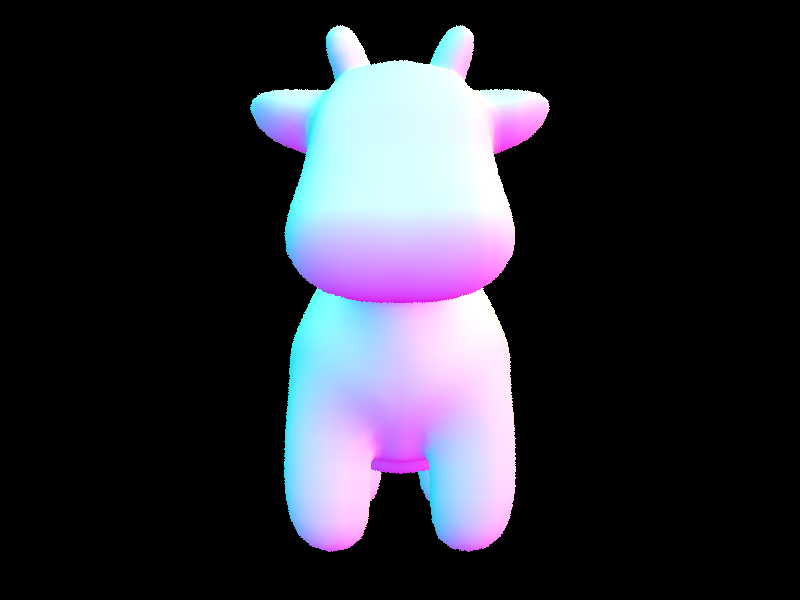
Part 2: Bounding Volume Hierarchy
BVH Construction
The Bounding Volume Hierarchy (BVH) accelerates ray tracing by organizing primitives into a binary tree. Each node contains an axis-aligned bounding box (AABB) that encloses all primitives in its subtree, allowing rays to quickly reject entire branches that don't intersect.
Splitting Heuristic
I implemented a SAH-inspired average-centroid split with longest-extent axis selection:
- Axis Selection: Choose the axis (X, Y, or Z) with maximum bounding box extent. This is a simplification of the Surface Area Heuristic (SAH).
- Split Point: Use the mean of primitive centroids along the chosen axis: \( split\_point = \frac{\sum centroid[i]}{n} \)
- Partition: Use std::partition to divide primitives into left (centroid < split_point) and right (centroid ≥ split_point) children.
The longest-extent axis heuristic provides good balance between construction time and query performance. While more sophisticated SAH-based methods can achieve better performance, they require evaluating many candidate split positions and estimating traversal costs.
Images: Normal Shading for Large DAE Files
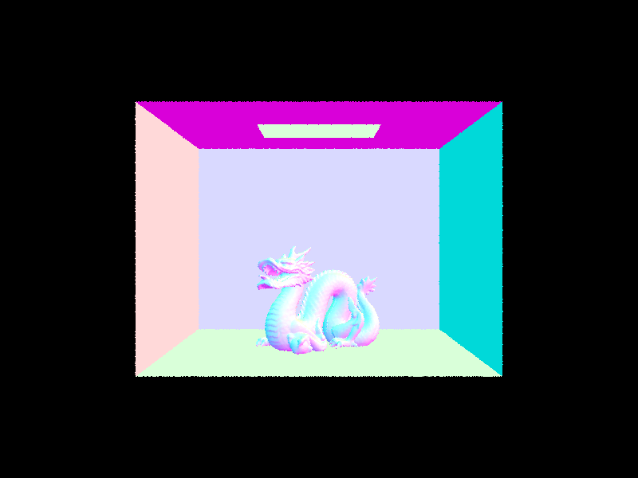
BVH Performance Comparison
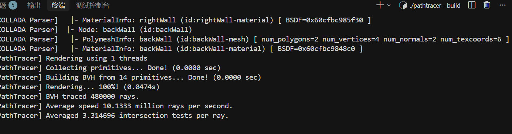
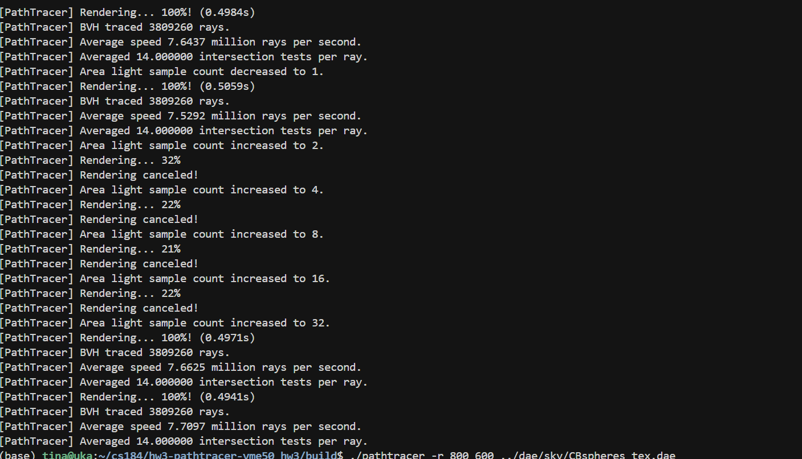
Part 3: Direct Illumination
Hemisphere Sampling Implementation
Uniform hemisphere sampling estimates direct lighting by sampling uniformly in all directions above the surface. The algorithm builds a coordinate system aligned with the surface normal, generates uniform hemisphere samples, casts shadow rays to test visibility, and accumulates contributions using the Monte Carlo estimator:
\[ L_{out} += \frac{f_r \cdot L_{in} \cdot \cos\theta}{pdf} \]The uniform hemisphere PDF is constant: \( pdf = \frac{1}{2\pi} \).
Importance Sampling Implementation
Importance sampling improves efficiency by sampling only toward light sources. Instead of wasting samples on directions that miss lights, we sample directly from light sources using their probability distributions. This dramatically reduces variance because all samples (when not occluded) contribute light.
The algorithm iterates over all lights in the scene, sampling each light source according to its type (delta lights sample once, area lights sample ns_area_light times). For each sample, we cast a shadow ray and evaluate the BRDF only for directions that can potentially receive light.
Comparison Table
| Aspect | Hemisphere Sampling | Importance Sampling |
|---|---|---|
| Sample Distribution | Uniform in hemisphere | Toward light sources |
| Constant: 1/(2π) | Varies by light type | |
| Variance | High | Lower |
| Point Light Support | Poor (zero probability) | Perfect (delta distribution) |
| Convergence | Slow | Faster |
Images: Direct Illumination Comparison
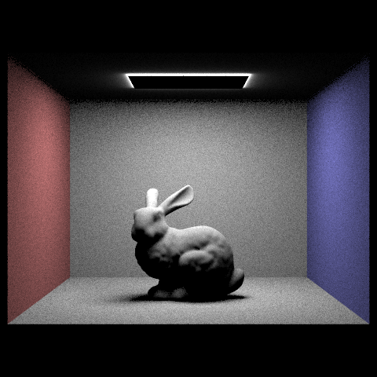
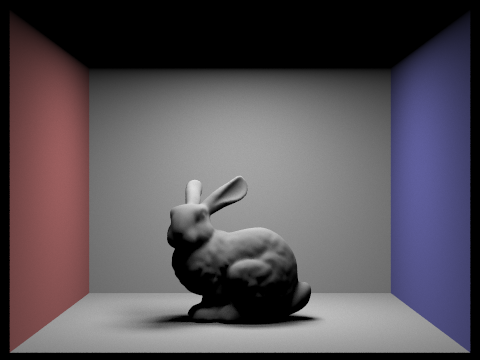
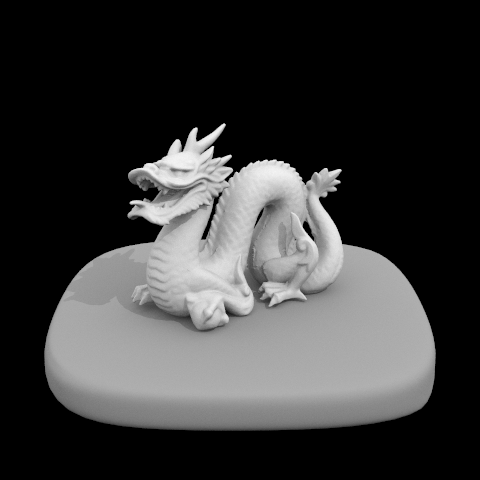
Light Ray Comparison (1, 4, 16, 64 rays)
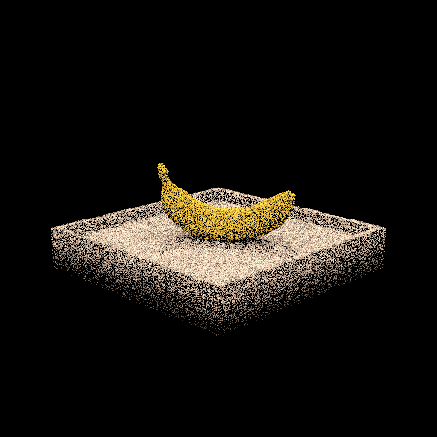
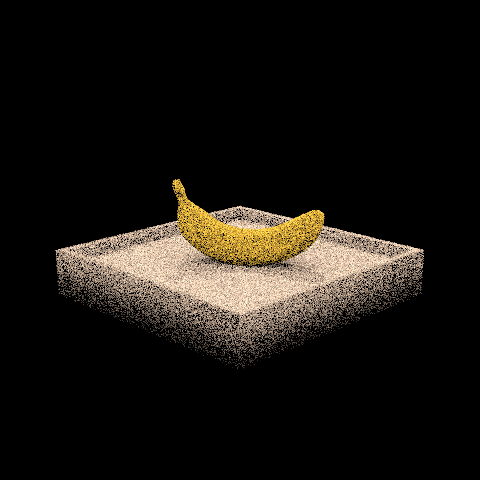
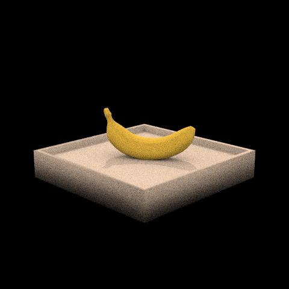
Analysis: Uniform vs Importance Sampling
Analysis: The comparison between uniform hemisphere sampling and importance sampling reveals significant differences in both visual quality and convergence behavior. With uniform hemisphere sampling, the image exhibits high-frequency noise throughout, especially visible in shadow regions, because most samples land in directions that don't contribute light. In contrast, importance sampling produces significantly cleaner images even with the same number of samples per pixel. As the number of light rays increases from 1 to 64, the soft shadow regions become progressively smoother. With 1 light ray, the shadows appear speckled and noisy; at 64 rays, the shadows approach their theoretical smooth appearance. This demonstrates that importance sampling's efficiency gain comes from concentrating computation on directions that matter—every non-occluded sample contributes light, whereas hemisphere sampling wastes most samples on empty space.
Part 4: Global Illumination
Indirect Lighting Implementation
While direct lighting computes illumination from light sources, indirect lighting accounts for light that has bounced off other surfaces before reaching the camera. This creates soft shadows, color bleeding, and ambient occlusion effects.
The implementation in at_least_one_bounce_radiance works as follows:
- Sample an incoming direction using the BSDF (cosine-weighted hemisphere sampling)
- Trace a ray in that direction and find the next intersection
- Recursively compute radiance from subsequent bounces
- Accumulate contributions: \( L_{out} += f_r \cdot L_{next} \cdot \cos\theta / pdf \)
- Apply Russian Roulette at the last bounce for unbiased termination
Russian Roulette
Russian Roulette provides unbiased random termination of path tracing. At the last allowed bounce (depth == 1), we flip a coin with survival probability p = 0.6:
- If the path terminates (probability 0.4): return 0
- If the path survives (probability 0.6): weight contribution by 1/0.6 to maintain unbiasedness
Without Russian Roulette, paths would be arbitrarily truncated at max_ray_depth, introducing bias. With Russian Roulette, the expected value remains correct even though individual paths have different lengths.
Images: Global Illumination (1024 samples per pixel)
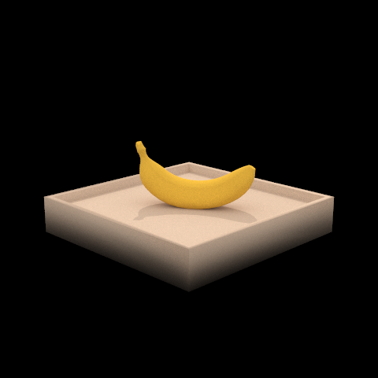
Direct vs Indirect Illumination
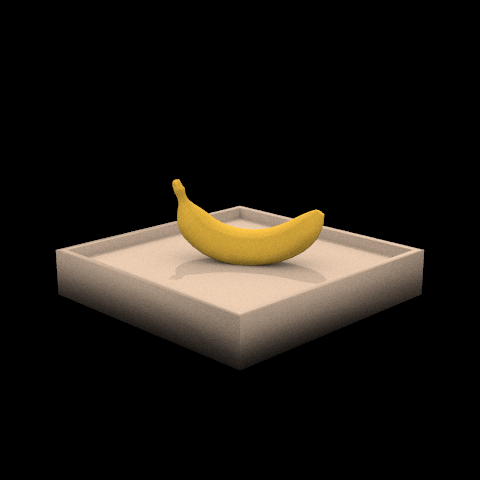
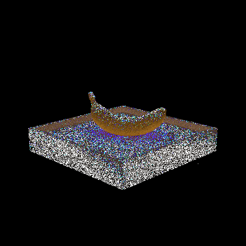
Bounce Analysis for CBbunny.dae
Analysis of 2nd and 3rd bounce: With m = 2, we see the first indirect bounce, which shows how light bounces once off the walls onto the bunny. The scene becomes noticeably more realistic compared to direct-only illumination, with soft color bleeding from the colored walls. With m = 3, we see the second indirect bounce—light that has bounced twice. This contributes to the very soft ambient illumination in corners and under overhangs. Compared to rasterization, which cannot capture these multi-bounce effects, path tracing produces images that match physical light transport, creating the subtle realism that distinguishes physically-based rendering from traditional rasterization.
Accumulated vs Unaccumulated Bounces
With isAccumBounces = true, each bounce contributes to a separate layer of the final image, allowing visualization of how light energy propagates through the scene. With isAccumBounces = false, only paths exactly matching the depth are traced.
Russian Roulette Analysis
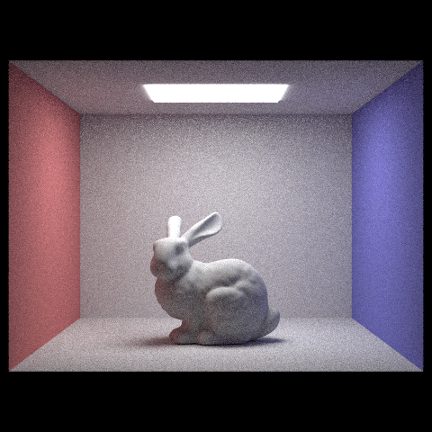
Samples Per Pixel Comparison
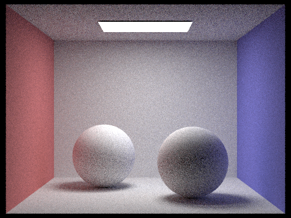
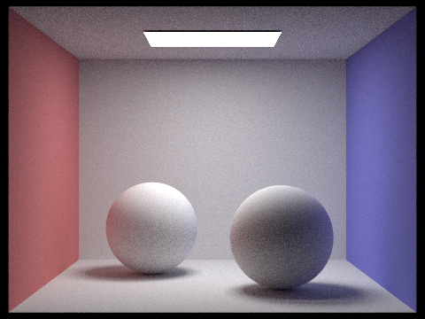
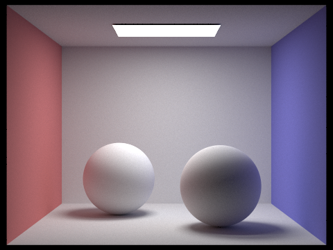
Part 5: Adaptive Sampling
The Problem with Uniform Sampling
In path tracing, different pixels require different numbers of samples to converge. Flat regions (walls, sky) converge quickly with few samples, while complex regions (shadows, caustics) require many more. Using uniform sampling wastes computation on pixels that have already converged.
Statistical Framework
Adaptive sampling uses sample variance and confidence intervals to determine convergence:
- Sample Mean: \( \mu = \frac{s_1}{n} = \frac{\sum_{k=1}^{n} x_k}{n} \)
- Sample Variance (Bessel's correction): \( \sigma^2 = \frac{1}{n-1}\left(s_2 - \frac{s_1^2}{n}\right) \)
- Standard Error: \( SE = \frac{\sigma}{\sqrt{n}} \)
Convergence Criterion
A pixel converges when we're 95% confident that the true mean lies within a relative tolerance:
\[ \text{Converged} \iff 1.96 \cdot SE < \text{maxTolerance} \cdot \mu \]
Convergence is checked every samplesPerBatch samples (default: 32) for efficiency.
Implementation
The implementation tracks running sums \( s_1 = \sum x_k \) and \( s_2 = \sum x_k^2 \) incrementally. Every samplesPerBatch samples, we compute the current mean and variance, then check if the 95% confidence interval is within tolerance. If so, we stop sampling and average over only the samples taken.
Images: Adaptive Sampling Results
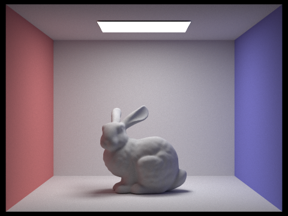
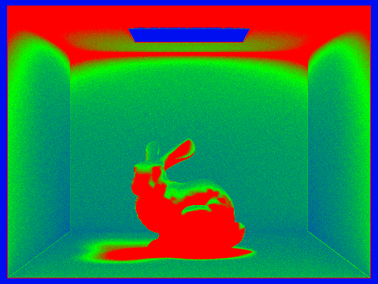
The sampling rate images clearly show where adaptive sampling concentrated computation. Darker regions (flat walls, ceiling) converged quickly with fewer samples, while brighter regions (shadow boundaries, corners, areas with complex light interactions) required more samples. This demonstrates that adaptive sampling effectively distributes computational resources based on actual image complexity.